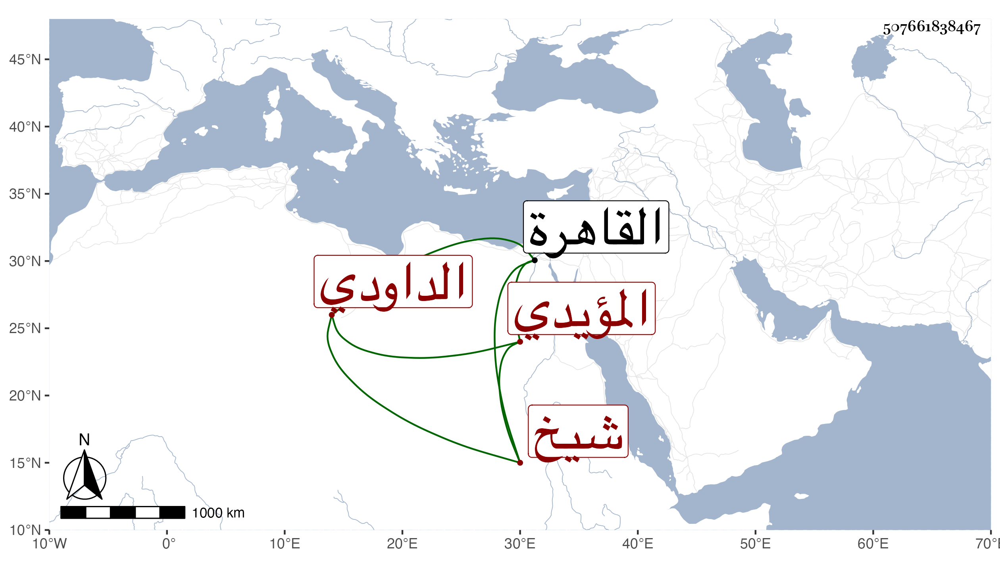

0902Sakhawi.DawLamic.ITO20230111-ara1.EIS1600.507661838467
Biography ID: 507661838467
592
محمد بن دمرداش ناصر الدين الداودي المؤيدي شيخ . ولد في سنة اثنتين وثلاثين بباب الوزير من القاهرة ونشأ فحفظ القرآن وتلا به للسبع إفرادا وجمعا على أبيه ثم لنافع وابن كثير وأبي عمرو جمعا على ابن كزلبغا والزين طاهر وللسبع جمعا على عبد الرزاق والشهاب بن أسد وناصر الدين الأخميمي وحفظ الشاطبيتين والقدوري والألفية وتصريف العزي وأكثر من التلاوة وتميز في الرمي والرمح وغيرهما وخدم للشهابي بن العيني أستادارا ، وكان يشبك الفقيه يجله ، وقد لقيني غير مرة .
